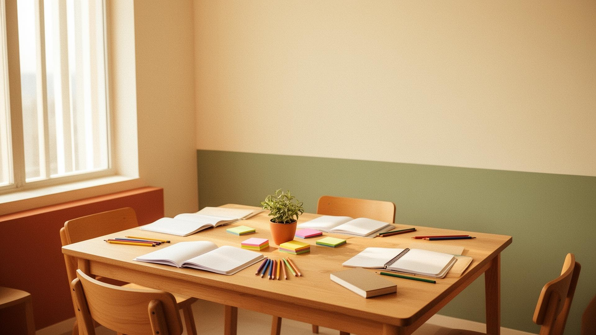

Materials a mida
Convertim idees complexes en peces clares i belles.
Dissenyem recursos visuals que ajuden a explicar millor, alinear equips i fer visibles decisions pedagògiques avançades.
- Infografies per ordenar processos i marcs de treball.
- Plantilles per dissenyar situacions d'aprenentatge.
- Recursos d'acompanyament per a formació interna.
- Materials adaptables a qualsevol matèria o etapa.
